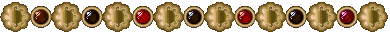
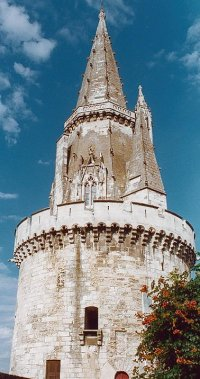
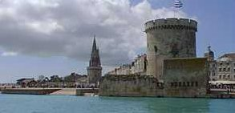
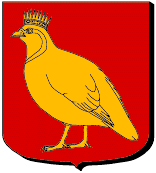

|


| |
|
|
| The Aunis, Mathieu
Choret's homeland.
In the early 1620s, Mathieu Choret and Jeanne Serre
have a son, to whom they give his father's
name: Mathieu.
According to several web sources,
including the Fichier Origine, Mathieu comes from the parish of
Notre-Dame-de-Cougnes in La Rochelle. This parish is
the oldest in the town, dating from the 12th century. Since the
town's churches, including Notre-Dame, had been destroyed
in 1568 during the Wars of Religion, Mathieu was probably baptized
in the Sainte-Marguerite chapel,
where the people of La Rochelle worshipped for many years. 
Chapelle
Sainte-Marguerite 
Notre-Dame church;
its rebuilding would begin in 1653, after
Mathieu had left for Canada.
 La Rochelle is then the capital
of the Aunis, a province of France under the Ancien Régime, on
the Atlantic coast, between Poitou and Saintonge.It is
a town fortified by Vauban, with five parishes. La Rochelle is then the capital
of the Aunis, a province of France under the Ancien Régime, on
the Atlantic coast, between Poitou and Saintonge.It is
a town fortified by Vauban, with five parishes.
Bounded by the Poitevin and
Charente marshes, the Aunis is a limestone plateau that forms
cliffs along parts of the coast (opposite the Île de Ré, for
example). The smallest province in France, the Aunis is a flat land
all its own, standing out sharply from the neighbouring provinces,
above all for its rural history and the leading role of La
Rochelle.

|
|
The history of the Aunis and of La
Rochelle

|
|
A few remains bear witness to
ancient human settlement; those found so far go back
to the Neolithic. Throughout its history the province was
a prize fought over by nations and princes. It was
under the Dukes of Aquitaine that La Rochelle became the capital
of the Aunis. Having become an English possession through the marriage of Eleanor
of Aquitaine to the King of England in 1152, the town sided
with John Lackland ( remember the days of Robin
Hood: he is loyal to King Richard the Lionheart, who has gone off on
crusade, and John Lackland is Richard's brother, who wants to seize
the crown) in his conflict with the crown of
France. After the first siege of La Rochelle, the Aunis came
under the control of the kings of France.
But in the second half of the 16th
century it chose the Protestant side and alliance with
England. In 1551-1552 La Rochelle rose against
Francis I over the extension of the gabelles (a kind of
tax). Ravaged by the Wars of Religion, La Rochelle came to be seen
as the Protestant capital.
From 1620 on, Louis XIII, through
his minister Richelieu, waged a relentless struggle against
the Protestants, but it was not until 1627 that he attacked the town of
La Rochelle. The besieged town
did not hesitate to ask England
for help, and England used this pretext to attack
France and destroy the navy it was building.
War was declared. England also seized the opportunity
to send the Kirke
brothers against the trading posts of New France,
hoping to grow rich on the fur trade.
The clashes between Catholics and
Protestants were extraordinarily violent, despite the Edict of Nantes signed
in 1598. The siege of La Rochelle lasted fifteen months. The
town held out heroically but had to surrender in 1628, after
fifteen thousand of its twenty thousand inhabitants had died
by the sword or of famine.
Mathieu
Choret is only a small child during these events, and he is
Catholic. Living in La Rochelle at the time of the siege
led by Richelieu, how did he and his family live through it all?
Did they take refuge outside La Rochelle during the siege? Questions without
answers. But one thing is certain: it was a hard time for
the people of the Aunis. To
get an idea of the period, its manners, its costumes...
look at the many French films made about the Musketeers.
It is exactly their time and, in Alexandre
Dumas's novel, I seem to remember that they take part in the siege of La
Rochelle. |
|

LA
ROCHELLE These
towers saw Mathieu leave for Canada. |
|
The entrance to the Old Port is framed by
two 14th-century towers: on the left, the Tour de la Chaîne (Chain Tower),
built around 1375 and named for the chain that was fastened
to close the harbour at night; on the right, the Tour Saint-Nicolas,
built between 1350 and 1384, a powerful
fortress in its own right, shaped like a pentagon with four of its corners
flanked by engaged towers and the fifth by a square keep.

Passing through the Porte des Dames, at the foot of
the Tour de la Chaîne, you find on the right a staircase up to the rue
Sur les Murs, built on a stretch of the medieval ramparts.
It leads to the Tour de la Lanterne (1445-1476), a magnificent
cylindrical keep topped by a tall octagonal spire and flanked
by a stair turret carrying a lantern that once served as a
lighthouse.
The Tour de la Lanterne, the last
lighthouse for passengers leaving the harbour for the great crossing.
From the Tour de la Lanterne, still following the foot of the rampart
and then passing through Vauban's fortified wall by the Porte des
Deux Moulins, you come to the Plage de la Concurrence, a small beach
framed by lovely shady promenades.

The Tour de la Chaîne in the foreground, and the Tour de la
Lanterne in the distance.
The town hall, the most
remarkable monument in La Rochelle, was built partly under
Francis I, around 1544, and partly under Henri IV, between 1595 and
1607. In front of it stands a 15th-century curtain wall, with crenellations
and machicolations, linking two small belfries. In the courtyard, the façade
is a sumptuous piece of work, very typical of the Saintonge
Renaissance, with an unusual open gallery on the ground floor.
It is flanked on the left by a pavilion from the time of Henri II.
|
|

The arms of the province of Aunis are
gules, a partridge crowned or.
The origin of this coat of arms is
unknown.
|
|